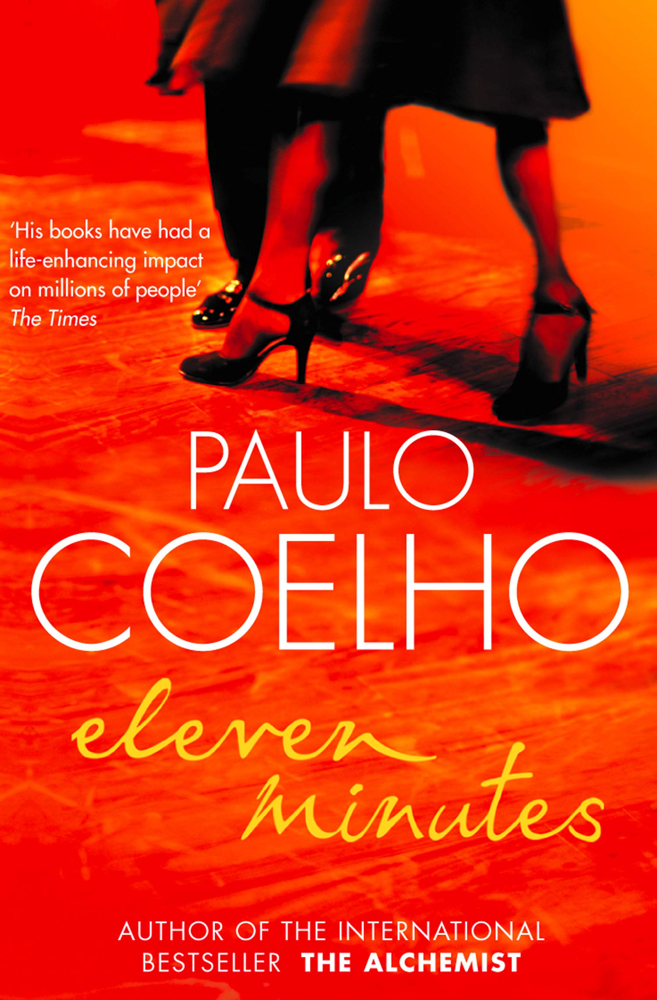

Popular Books

Title: The Alchemist
Discreption: The Alchemist is a novel by Brazilian author Paulo Coelho that was first
published
in 1988. Originally written in Portuguese, it became a widely translated international bestseller.
Author: Paulo Coelho
Genre: Quest, adventure, fantasy
Originally published: 1988

Title: Eleven Minutes
Discreption: Eleven Minutes is the story of Maria, a young girl from a Brazilian village,
whose
first innocent
brushes with love leave her heartbroken. At a tender age, she becomes convinced that she will never find
true
love, instead believing that "love is a terrible thing that will make you suffer.
Author: Paulo Coelho
Genre: Novel, Fiction
Originally published: 2003

Title: Veronika Decides to Die
Discreption: Veronika Decides to Die is a novel by Paulo Coelho. It tells the story of
Veronika, a 24-year-old
Slovenian who appears to have everything in life going for her, but who decides to kill herself. This book
is
partly based on Coelho's experience in various mental institutions, and deals with the subject of madness.
Author: Paulo Coelho
Genre: Novel, Psychological Fiction
Originally published: 1998

Title: The Pilgrimage
Discreption: The Pilgrimage is a 1987 novel by Brazilian novelist Paulo Coelho. It is a
recollection of Paulo's
experiences as he made his way across northern Spain on a pilgrimage to Santiago de Compostela. The novel
serves
as part adventure story, part guide to self-discovery.
Author: Paulo Coelho
Genre: Novel
Originally published: 1987